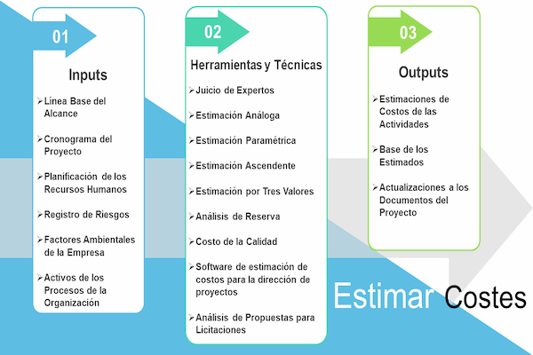
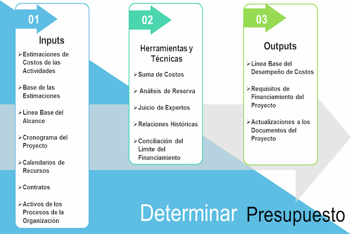
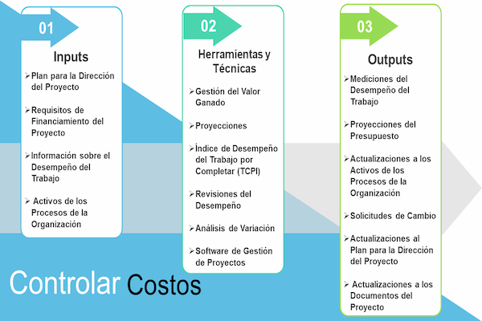

“La gestión del proyecto se puede definir como una forma de desarrollar la estructura en un proyecto complejo, donde las variables independientes de tiempo, costo, recursos y comportamiento humano se juntan”
Rory Burke
¿Qué es un consultor de gestión de proyectos?
Es un profesional independiente que desempeña el papel de asesor, planificador y líder al trabajar con clientes internos y externos para diseñar e implementar soluciones relacionadas con el proceso o la mejora de la calidad. Son un recurso valioso para las partes interesadas que buscan identificar y corregir ineficiencias en el flujo de trabajo y los procesos. El consultor de proyectos abarca una amplia gama de trabajo en varias industrias. Los consultores de proyectos ofrecen su experiencia en un proyecto a su empleador o clientes para ayudarlos a lograr sus objetivos comerciales. Estos proyectos pueden ser de naturaleza operativa, estratégica o técnica.
El Proyecto
Es la unidad básica de intervención en la cooperación para el desarrollo.
Tiene como finalidad satisfacer un conjunto de necesidades concretas a través de la aplicación de una serie de técnicas que ponen en juego un determinado número de recursos para obtener unos beneficios.
Un proyecto es un intento o esfuerzo temporal, único y progresivo realizado para producir algún tipo de resultado tangible o intangible (un producto, servicio, beneficio, ventaja competitiva, etc. únicos). Suele incluir una serie de tareas interrelacionadas que se planifican para su ejecución durante un período de tiempo fijo y dentro de ciertos requisitos y limitaciones como costo, calidad, desempeño, etc.
Las 3 Características Claves de un Proyecto
1- Es Temporal: Significa que todo proyecto tiene un comienzo y un final finitos. El inicio es el momento en que se inicia el proyecto y se desarrolla su concepto. El final se alcanza cuando se han cumplido todos los objetivos del proyecto (o no se han cumplido si es obvio que el proyecto no se puede completar, entonces se termina).
2- Entregables únicos: Cualquier proyecto tiene como objetivo producir algunos entregables que pueden ser un producto, servicio o algún otro resultado. Los entregables deben abordar un problema o una necesidad analizada antes del inicio del proyecto.
3- Elaboración progresiva: Con el avance de un proyecto, la investigación y la mejora continua están disponibles, y todo esto permite producir planes más precisos y completos. Esta característica clave significa que las sucesivas iteraciones de los procesos de planificación dan como resultado el desarrollo de soluciones más efectivas para avanzar y desarrollar proyectos.
Qué es la Gestión de un Proyecto
La gestión de proyectos es el arte de planificar, controlar y ejecutar un proyecto de una manera que garantice la entrega exitosa del resultado deseado. Se usa ampliamente en las organizaciones como un conjunto de herramientas para lograr metas y objetivos estratégicos.
Ventajas de la Gestión de un Proyecto
Las ventajas de utilizar la gestión de proyectos dentro del entorno empresarial de una empresa se pueden describir como:
1- Acelera la mejora y fortalecimiento de la gestión de la empresa mediante la implementación de las ideas de gestión participativa.
2- Los proyectos ayudan a involucrar a los empleados en la toma de decisiones.
3- Se adopta un enfoque de ingeniería de sistemas que ayuda a lidiar con los riesgos de manera efectiva.
4- Lograr cambios específicos que están vinculados a las estrategias de la empresa.
Inicio del Proyecto: Un proyecto se inicia, nombra y define formalmente a un nivel amplio durante esta fase. Los patrocinadores del proyecto y otras partes interesadas importantes deciden con la debida diligencia si se comprometen o no con un proyecto. Dependiendo de la naturaleza del proyecto, se realizan estudios de viabilidad. O, según sea necesario, en un proyecto de TI: la recopilación y el análisis de los requisitos se realizan en esta fase. En la industria de la construcción, una carta del proyecto se completa en esta fase.
Planificación del Proyecto: Se desarrolla un plan de gestión del proyecto de manera integral de planes individuales para: costo, alcance, duración, calidad, comunicación, riesgo y recursos. Algunas de las actividades importantes que marcan esta fase son la elaboración de WBS, desarrollo de cronograma, gráficos de hitos, gráficos GANTT , estimación y reserva de recursos, fechas de planificación y modos de comunicación con las partes interesadas en función de hitos, plazos y entregas importantes.
Se determina un plan para gestionar los riesgos identificados y no identificados, ya que esto puede afectar aspectos de un proyecto más adelante. La planificación de la gestión de riesgos incluye: identificación y análisis de riesgos, enfoques de mitigación de riesgos y planificación de la respuesta a los riesgos.
Ejecución del proyecto: Se desarrolla y completa un entregable del proyecto, adhiriéndose a un plan trazado. Muchas tareas durante esta fase capturan métricas del proyecto a través de tareas como reuniones de estado y actualizaciones de estado del proyecto, otros informes, necesidades de recursos humanos e informes de rendimiento. Esta es una fase importante, ya que le ayudará a comprender si su proyecto será un éxito o un fracaso.
Seguimiento y control del proyecto: Que se produce al mismo tiempo que la fase de ejecución, se trata principalmente de medir el desempeño y la progresión del proyecto de acuerdo con el plan del proyecto. La verificación y el control del alcance ocurren para verificar y monitorear el avance del alcance y el cambio de control para rastrear y administrar los cambios en los requisitos del proyecto.
El cálculo de los indicadores clave de rendimiento para el costo y el tiempo se realiza para medir el grado de variación, si existe, y en cuyo caso se determinan y sugieren medidas correctivas para mantener un proyecto en marcha. Para evitar el fracaso del proyecto, considere por qué es probable que falle y las formas de evitarlo.
Cierre del proyecto: Un proyecto se cierra formalmente. Incluye una serie de tareas importantes como la entrega del producto, la liberación de recursos, la recompensa de los miembros del equipo y la terminación formal de los contratistas en caso de que estuvieran empleados en el proyecto.
Procesos y Áreas de Conocimiento en la Gestión de Proyectos
Las áreas de conocimiento de la gestión de proyectos coinciden con los grupos de procesos, que son el inicio del proyecto, la planificación del proyecto, la ejecución del proyecto, el seguimiento y control y el cierre del proyecto. Estas son las fases cronológicas por las que atraviesa todo proyecto. Las áreas de conocimiento tienen lugar durante cualquiera de estos grupos de procesos. Puede pensar en los grupos de procesos como horizontales, mientras que las áreas de conocimiento son verticales. Las áreas de conocimiento son la materia técnica central, que son necesarias para la gestión eficaz de proyectos.
Gestión de Integración del Proyecto: La Integración del Proyecto comienza con la preparación de la Carta, que es la guía principal para que cualquier gerente de proyecto y equipo involucrado investigue los detalles del proyecto.
Gestión de Alcance del Proyecto: El alcance aquí define la recopilación de los requisitos del proyecto, definiendo las metas y misiones que completarán el diagrama del proyecto y haciendo la estructura de desglose del trabajo correcta que ayudará al equipo a seguir adelante con el plan de gestión del cronograma para su implementación en la etapa de planificación.
Gestión de Tiempo de Proyecto: La Gestión del Cronograma comienza con la planificación con los insumos de la estructura de Desglose del Trabajo, definiendo las actividades que facilitarán la ejecución del proyecto, secuenciando las actividades para ayudar al ejecutor y mantener el cronograma en orden.
Gestión de Costes del Proyecto: El costo del proyecto es otro factor importante que determinará la credibilidad y efectividad de la empresa en la ejecución del proyecto en el monto de la factura aceptada. Los pasos involucrados en esta área de conocimiento se distribuyen en las fases de planificación y seguimiento y control.
Gestión de Calidad del Proyecto: La calidad del proyecto es uno de los indicadores destacados que determinan los entregables, el costo y el cronograma son directamente proporcionales a la calidad y el alcance del proyecto que se transfiere a la entrega final.
Gestión del Recursos Humanos del Proyecto: La columna vertebral del proyecto en términos de capacidades humanas y planificación de su programa de trabajo general. Las tareas de esta categoría de conocimiento se distribuyen en las fases de planificación, ejecución y gestión y control.
Gestión de Información del Proyecto: La gestión de las comunicaciones es la clave para el bien gestión de relaciones entre los miembros del equipo, monitorearlos también es necesario para intervalos regulares para garantizar que todos los problemas se solucionen a tiempo.
Gestión de Riesgos del Proyecto:Es un proceso para identificar los riesgos potenciales que afectarán el proyecto, analizarlos para ver cómo va a tener un impacto en el ritmo de implementación del proyecto sobre el cronograma planificado.
Gestión de Contratos del Proyecto:Esta es un área que se refiere a factores y proveedores internos y externos que serán parte del proyecto y garantizarán una entrega de buena calidad con la orden de compra de organizaciones calificadas.
Gestión de Partes Interesadas del Proyecto: Comienza con la identificación de las posibles partes interesadas que serán parte del proyecto y se clasifican en internas y externas, las personas nominadas para ser representadas en el proyecto pueden ser del lado del cliente y del lado del ejecutor.
¿Porqué es necesario un Consultor de Gestión de Costes de Proyecto?
La gestión de costos del proyecto es el proceso de estimar, presupuestar y controlar los costos a lo largo del ciclo de vida del proyecto, con el objetivo de mantener los gastos dentro del presupuesto aprobado.
Para que un proyecto se considere exitoso, es necesario que:
1.- Cumpla con los requisitos y el alcance.
2.- Su calidad de ejecución sea de alto nivel.
3.- Se complete dentro del cronograma.
4.- Se complete dentro del presupuesto.
Por lo tanto, la gestión de costos del proyecto es uno de los pilares clave de la gestión de proyectos y es relevante independientemente del dominio, ya sea fabricación, venta minorista, tecnología, construcción, etc. Ayuda a crear una línea de base financiera contra la cual los gerentes de proyecto pueden comparar el estado actual de los costos de su proyecto y realinear la dirección si es necesario.
Al implementar prácticas eficientes de gestión de costos, los gerentes de proyectos pueden:
1.- Establecer expectativas claras con las partes interesadas.
2.- Controlar la fluencia del alcance debido a las transparencias establecidas con el cliente.
3.- Realizar un seguimiento del progreso y responder con acciones correctivas a un ritmo rápido.
4.- Mantener el margen esperado, aumentar el ROI y evitar perder dinero en el proyecto.
5.- Generar datos para comparar proyectos futuros y realice un seguimiento de las tendencias de costos a largo plazo.
Contenido de la Gestión de Costes de un Proyecto (PMBOK)

Estimar Costes
Consiste en desarrollar una aproximación de los recursos monetarios necesarios para completar las actividades del proyecto.
Gestión de Costes
Estimar Costes
Es el proceso que consiste en desarrollar una aproximación de los recursos monetarios necesarios para completar las actividades del proyecto. La estimación de costos es una predicción basada en la información disponible en un momento dado. Incluye la identificación y consideración de diversas alternativas de cómputo de costos para iniciar y completar el proyecto.

Determinar Presupuesto
Sumar los costos estimados de actividades individuales o paquetes de trabajo para establecer una línea base de costo autorizada.
Gestión de Costes
Determinar Presupuesto
Esta línea base incluye todos los presupuestos autorizados, pero excluye las reservas de gestión. Los presupuestos del proyecto constituyen los fondos autorizados para ejecutar el proyecto. El desempeño de los costos del proyecto se medirá con respecto al presupuesto autorizado.

Controlar Costos
Es el proceso por el que se monitorea la situación del proyecto para actualizar el presupuesto del mismo y gestionar cambios a la línea base de costo.
Gestión de Costes
Controlar Costos
Controlar los Costos es el proceso por el que se monitorea la situación del proyecto para actualizar el presupuesto del mismo y gestionar cambios a la línea base de costo. La actualización del presupuesto implica registrar los costos reales en los que se ha incurrido a la fecha.
Propuesta de Valor del Servicio Gestión de Costes de Proyecto:
La gestión de proyectos tiene como objetivo producir un producto final que resultará en algún cambio en beneficio de la organización que instigó el proyecto. Es el inicio, la planificación y el control de una serie de tareas necesarias para entregar este producto final. Los proyectos que requieren una gestión formal son aquellos que:
1- Producen algo nuevo o alterado, tangible o intangible.
2- Tienen un lapso de tiempo finito: un comienzo y un final definidos.
3- Es probable que sean complejos en términos de trabajo o grupos involucrados.
4- Requieren la gestión del cambio.
5- Requieren la gestión de riesgos.
La inversión en una gestión de proyectos eficaz tendrá una serie de beneficios, como:
1- Proporcionar una mayor probabilidad de lograr el resultado deseado.
2- Asegurar un uso eficiente y de mejor valor de los recursos;
satisfaciendo las diferentes necesidades de las partes interesadas del proyecto.
¿Cuándo utilizar la Gestión de Proyectos?
Los proyectos son independientes de las actividades habituales y se producen cuando una organización desea ofrecer una solución para establecer requisitos dentro de un presupuesto y un plazo acordados. Los proyectos requieren que un equipo de personas se reúna temporalmente para centrarse en los objetivos específicos del proyecto. Como resultado, el trabajo en equipo efectivo es fundamental para proyectos exitosos.
Los proyectos requieren que un equipo de personas se reúna temporalmente para centrarse en los objetivos específicos del proyecto. Como resultado, el trabajo en equipo efectivo es fundamental para proyectos exitosos. La gestión de proyectos se ocupa de gestionar paquetes de trabajo discretos para lograr objetivos específicos. La forma en que se gestiona el trabajo depende de una amplia variedad de factores.
¿Quién usa la Gestión de Proyectos?
Cualquiera y todo el mundo gestiona proyectos, incluso si no se les llama formalmente "director de proyectos". ¿Has organizado alguna vez un evento? Ese es un proyecto que gestionó con un equipo de personas, y la gestión de proyectos es una habilidad para la vida de todos. Más formalmente, los proyectos surgen en todas las industrias y negocios.
¿Qué es PMBOK en la Gestión de Proyectos?
PMBOK son las siglas de Project Management Body of Knowledge. Es un conjunto de terminología estándar y pautas para la gestión de proyectos publicados y actualizados por The Project Management Institute (PMI).
¿Qué sentido tiene un Director de Proyecto?
Son responsables de todo el alcance del proyecto, el equipo del proyecto , los recursos y el éxito o el fracaso del proyecto .
¿Qué es el valor ganado en la Gestión de Proyectos?
El valor devengado se refiere a un valor asignado al trabajo, que se puede expresar en horas y / o valores monetarios. La gestión del valor ganado (EVM) , por otro lado, es una herramienta que se utiliza para medir y predecir el desempeño del proyecto comparando el valor ganado planificado con el real.
¿Qué es un diagrama de Gantt en la Gestión de Proyectos?
Un diagrama de Gantt es una tabla que ilustra el curso de un proyecto y todos los elementos involucrados. Este visual fue desarrollado por primera vez por Karol Adamiecki en 1896, luego Henry Gantt ideó su propia versión que ilustra un cronograma de proyecto en la década de 1910. Los diagramas de Gantt son una herramienta útil cuando desea ver el panorama completo de uno o varios proyectos. Le ayuda a ver qué tareas dependen unas de otras y qué hitos se avecinan.
¿Qué es SMART en la Gestión de Proyectos?
SMART se refiere a los criterios para establecer metas y objetivos, es decir, que estas metas son: Específicas, Medibles, Alcanzables, Relevantes y de duración determinada. La idea es que cada objetivo del proyecto debe cumplir con los criterios SMART para ser efectivo.
¿Qué es PERT en la Gestión de Proyectos?
PERT es una herramienta de planificación de la gestión de proyectos que se utiliza para calcular la cantidad de tiempo que se necesita para terminar un proyecto de manera realista. PERT son las siglas de Program Evaluation Review Technique. Los gráficos PERT son herramientas que se utilizan para planificar tareas dentro de un proyecto, lo que facilita la programación y la coordinación de los miembros del equipo para realizar el trabajo.
¿Conoces mis servicios?
Aliados Estratégicos
Consultor integral de negocios con experiencia en estrategia, procesos, planificación financiera y fiscal para América Latina. Mentoria gerencial y liderazgo.
Leonel Valdespino-
Consultor Empresarial
La estabilidad financiera de una empresa depende de la buena gestión de su contador en el manejo contable de las finanzas obteniendo resultados que mejoren su productividad.
Betzi Pacheco-
Asesora Empresarial
Asesorías en riesgo, prevención de riesgos y ofrecezco los mejores servicios y coberturas de seguro adaptadas a las necesidades del cliente e índole del negocio.
Belkys Velasco-
Agente de Seguros
Iniciativa y buena comunicación, capacidad para liderar equipos de trabajo. Con experiencia en planificación y control de gestión, dispocisión gerencial.
Riwil Fuentes-
Planificación Estratégica
PARA COMENZAR A DESARROLLAR TU PLAN
Te anexo las formas de comunicación disponibles
Caracas, Venezuela
JesusZerpaEconomia@gmail.com
+58 424 1487870
"La disciplina es más poderosa que los números; la disciplina, es decir, la perfecta cooperación, es un atributo de la civilización."